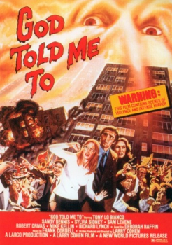

Country:United States, 91 minutes
Spoken languages:English
Genres:Crime, Horror, Sci-Fi, Mystery, Thriller
Director(s):Larry Cohen
Writer(s):Larry Cohen
Video Codec:Unknown
Number: 1357


Certification:R
Storyline:
A New York detective investigates a series of murders committed by random New Yorkers who claim that "God told them to."
Cast:

Medium: Original DVD,
Comments: Part of: Witches & Demons Collection
Loaned: No
Aspect ratio: Unknown